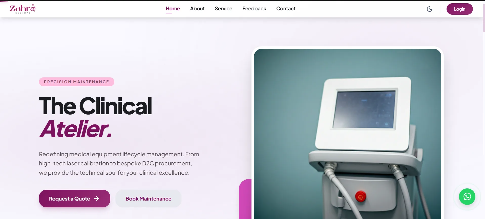
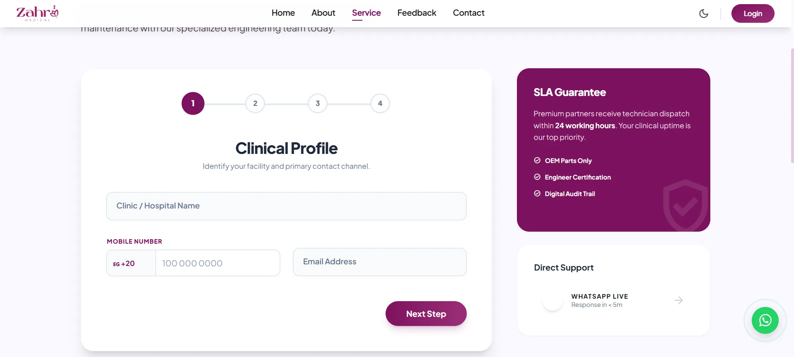
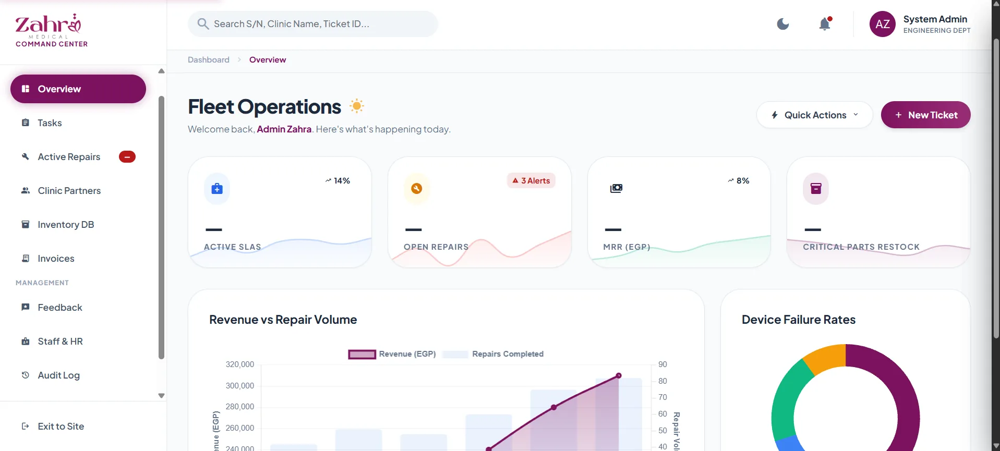

65 requirements, 7 roles
I wrote a formal PHP/MySQL service-platform specification covering 65 functional requirements and seven RBAC roles, with ticket lifecycle, SLA, and audit expectations.
Project case study · September 2025 – April 2026
A responsive platform for a medical-equipment maintenance company: public web presence, booking workflow, service operations, spare-parts inventory, and a downtime-cost calculator in one live product.
The product turns the company’s public presence and internal maintenance workflow into a clear, responsive experience.




The build connected a polished public site to operational workflows that the maintenance team can use day to day.
I wrote a formal PHP/MySQL service-platform specification covering 65 functional requirements and seven RBAC roles, with ticket lifecycle, SLA, and audit expectations.
A PHP equipment-booking flow with JavaScript validation helps the team schedule maintenance in real time while reducing invalid submissions.
Service operations include ticket progression, spare-parts inventory, quote requests, and an admin view for the work that needs attention.
The calculator turns equipment downtime into a concrete cost estimate that helps frame maintenance urgency for the customer.
I can walk through the requirements, booking workflow, service operations, or calculator design.